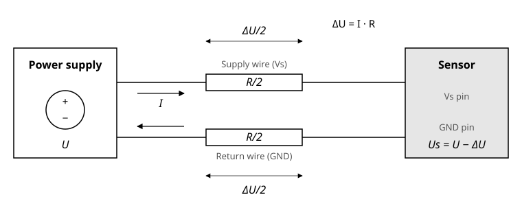

Cable Dimensioning¶
Select a device to prefill its power consumption, minimum sensor voltage, and number of supply wires. Choose a load condition to check typical, maximum, or startup consumption where specified in the operating instructions. Custom Values lets you adjust the device-specific inputs, for example to add digital output loads or combine sensors. Supply voltage and cable specifications remain editable for every device. Select the question-mark icon beside an input for guidance.
Result
| Voltage at the sensor | – |
|---|---|
| Minimum supply voltage | – |
| Margin | – |
| Voltage drop ΔU | – |
| Current I | – |
| Loop resistance R | – |
| Maximum cable length | – |
The curve shows the sensor voltage; dashed lines mark the voltage and length limits.
General remarks:
- This estimate does not check cable ampacity, connector ratings, fusing, or electrical safety.
- Measure the voltage at the sensor connector under load to verify the installation.
- Take the supply voltage range and power consumption of your variant from its operating instructions on sick.com.
- Starting current and startup power consumption are important sizing factors: they can exceed the normal operating load and cause a voltage drop that prevents the sensor from starting. Check both startup and maximum operating conditions.
- Choose a supply voltage within the permitted range, account for supply tolerances, and include digital output loads in the entered power.
- Startup is modeled as a constant-power load, not a transient simulation. Check the specified starting current and duration separately against the power supply, cable, and connector ratings.
- All device presets and Custom Values start with one wire per path. This is a calculation assumption, not a wiring recommendation; the selection is editable for every device. Select the number actually connected in parallel.
- Two parallel wires per path halve the cable resistance.
- For sensors sharing a cable, enter their combined power.
- To reduce voltage drop, shorten the cable, increase its cross-section, or use a higher permitted supply voltage.
- For detailed formulas, see the operating instructions.
Device-specific remarks:
- Device presets default to maximum operating consumption, not startup consumption. Select the startup load where available, or use Custom Values with the startup data from the operating instructions.
- LRS4000 presets exclude digital output loads; select Custom Values to add them.
- The multiScan100 presets cover multiScan136, multiScan165, and multiScan166; multiScan200 uses multiScan270 data; picoScan100 uses picoScan150 data. Verify the operating instructions for your exact variant.
- multiScan270 requires both supply and ground pin pairs: see Electrical Connection.
Both supply and return wires contribute to voltage drop:

Cable resistance reduces the voltage at the sensor by ΔU.
Was this page helpful?